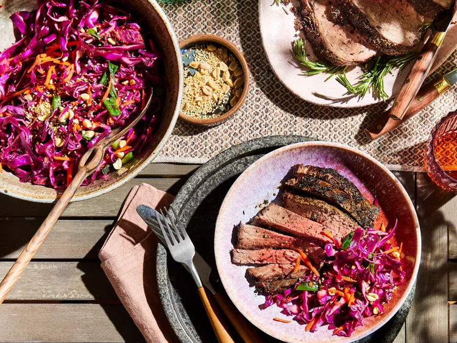

Charred Cabbage, Ginger, and Sesame Slaw

Description
When it's BBQ season, try this charred cabbage, ginger, and sesame slaw to mix up your coleslaw game.
Ingredients
- 1 head red cabbage (about 2 pounds)
- 1 lime, halved
- 6 green onions
- 1 (2-inch piece) fresh ginger, unpeeled
- 2 carrots, peeled and coarsely shredded
- 3 tablespoons vegetable oil
- 3 tablespoons rice vinegar
- 2 teaspoons honey or agave syrup
- 2 teaspoons Sriracha
- 1 teaspoon toasted sesame oil
- 1 clove garlic, minced
- 1/2 teaspoon crushed red pepper
- 1/4 teaspoon salt
- 4 teaspoons sesame seeds, toasted
- chopped, unsalted roasted peanuts, for garnish
Directions
- Preheat an outdoor grill to medium heat (350 degrees F to 375 degrees F/175 degrees C to 190 degrees C) . Remove
any wilted outer leaves from cabbage, then cut the head into quarters.
- Lightly oil grill grates. Arrange cabbage and lime, cut sides down, along with green onions and ginger, on grill
grates and cover. Grill green onions and lime, turning halfway through, until charred, 2 to 4 minutes for onions
and 6 to 8 minutes for lime. Grill cabbage and ginger, turning halfway through, until cabbage is charred and
ginger is softened, 12 to 16 minutes.
- When cool enough to handle, core and shred cabbage. Chop green onions, discarding any completely charred parts.
Toss together carrots, cabbage, and green onions in a large bowl.
- Peel and grate 1 tablespoon ginger (save any remaining ginger for another use).
- In a small bowl, whisk together ginger, juice from grilled lime, vegetable oil, vinegar, honey, sriracha, sesame
oil, garlic, crushed red pepper, and salt. Add to cabbage mixture and toss to combine. Cover and chill 1 hour
before serving, or up to 1 week.
- Just before serving, add sesame seeds; toss to combine. Garnish with peanuts.